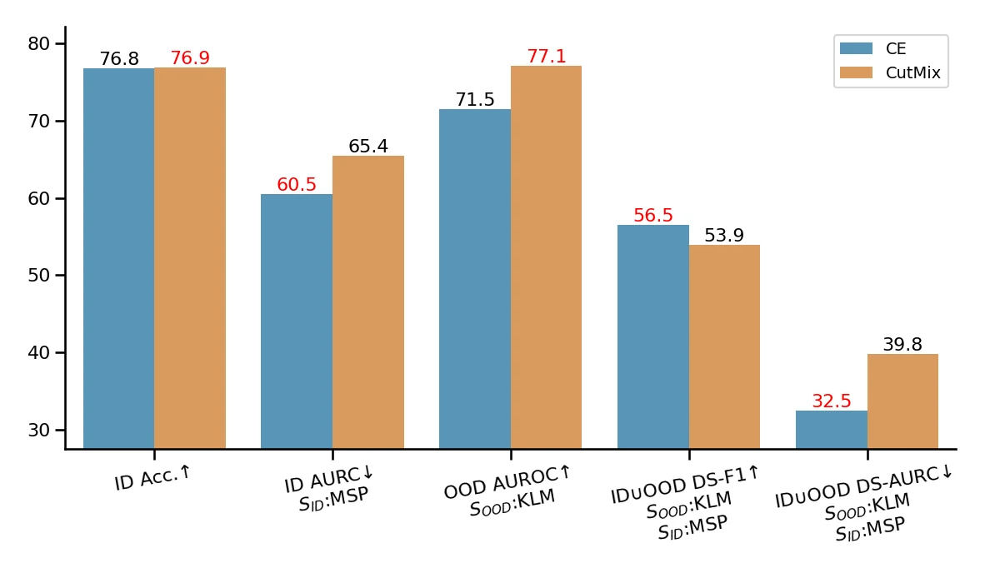
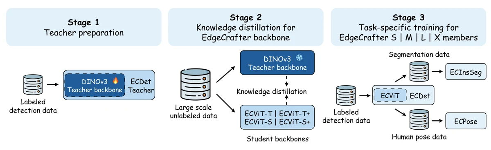

From Misclassifications to Outliers: Joint Reliability Assessment in Classification
Proposes a unified framework for assessing classifier reliability through joint misclassification and out-of-distribution detection.
Project page
Computer Vision Algorithm EngineerJ&T Express
I study how visual recognition models behave in real-world conditions, with a focus on identifying incorrect predictions, out-of-distribution inputs, and previously unseen classes. I also develop production vision systems, from data preparation and model training to evaluation and deployment.
B.E. and M.E. in Surveying and Mapping Engineering, Wuhan University.
Research on classifier reliability, edge vision, and 3D reconstruction from satellite imagery.
Proposes a unified framework for assessing classifier reliability through joint misclassification and out-of-distribution detection.
Project page
Uses task-specialized distillation to train compact Vision Transformers for dense prediction on resource-constrained devices.
Project page
Uses a prompted zigzag mechanism to reorganize feature interactions in Vision Transformers and distinguish correct predictions, misclassifications, and out-of-distribution inputs.
Extracts buildings from a single satellite image, infers their structure, and reconstructs their 3D geometry.
The track tests whether image classifiers can identify samples from classes unseen during training. Our team extended SURE with test-time augmentation and out-of-distribution scoring to distinguish images from known and unseen classes.
Code and competition resultsStudy how model confidence can flag incorrect predictions and how recognition systems can identify inputs outside the training distribution or from unseen classes.
OOD Detection / Failure Prediction / Open-set Recognition
Develop and deploy models for image classification, face recognition, re-identification (Re-ID), object detection, and image segmentation. Evaluate performance with data from deployed systems.
Build training frameworks and automated annotation tools that bring field data back into model training and evaluation.
Computer Vision Algorithm Engineer
Computer Vision Algorithm Engineer
Developed and deployed computer vision algorithms for security applications. Contributed to face recognition, classification reliability, metric learning, object detection, segmentation, and automated annotation.
B.E. / M.E. in Surveying and Mapping Engineering
Research included remote sensing image analysis and 3D reconstruction, with work on automated building reconstruction from a single satellite image.
Granted invention patent for a model training method, image classification method, apparatus, and electronic device.
Application publication CN121074477A